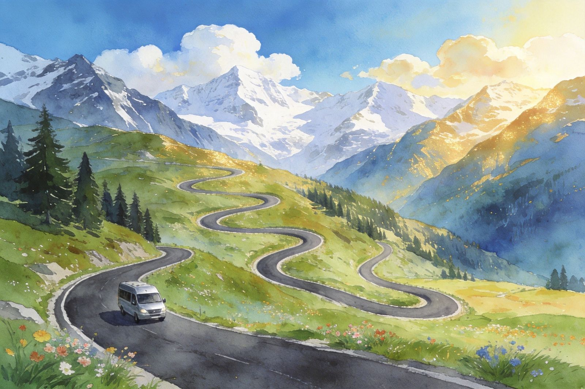
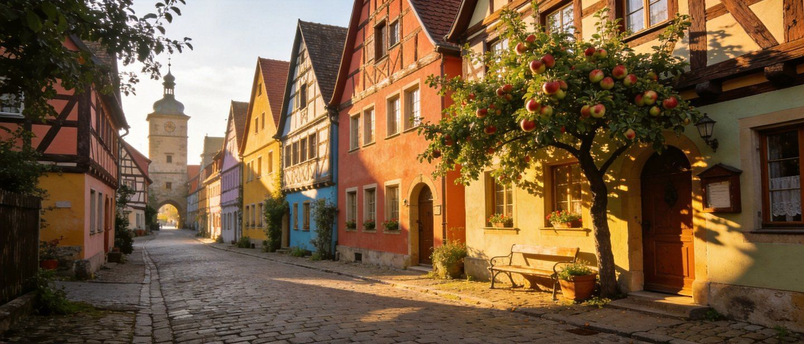
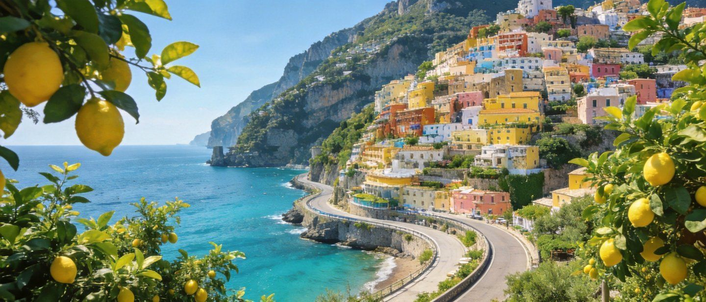
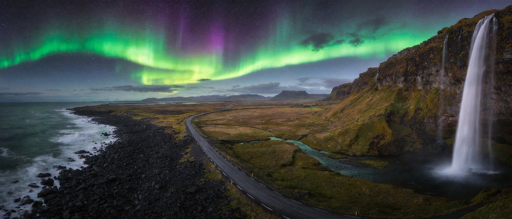
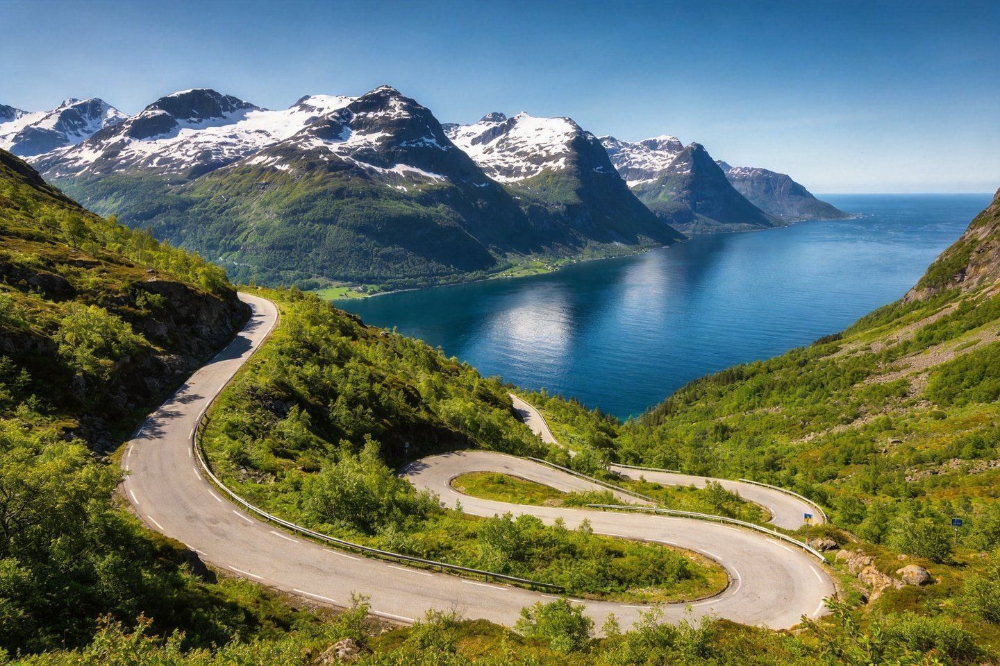
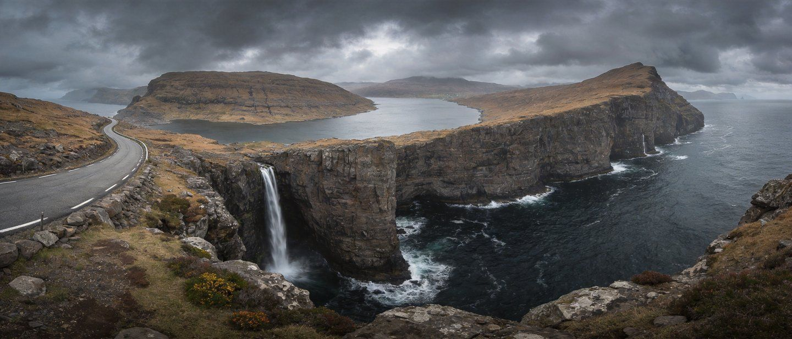

Drive Across Europe · 全域自驾
让方向盘带你
看遍欧洲
城堡、海岸、峡湾、雪山——欧洲不是一条线，而是几十种自驾假期。先想清楚你有几天、想开哪种路，再选那条对得上你节奏的风景路。
🪪 驾照与IDP🚗 租车💰 预算
🏆 十大路线🛣️ 高速收费🔖 红标必背 · 绿标弹性
从新手浪漫之路到老手的挪威峡湾——先定天数，再选线，把自由握在方向盘上
别盯着「穿越多少国家」。7天环线、每站住2晚，远比「匆忙多国行」愉快。途中预留拍照、延迟用餐和天气变化的余地。
宽阔主干道＋紧凑环线比陡峭窄山路好开。新人→浪漫之路/斯洛文尼亚/葡萄牙；爱风景且时间灵活→冰岛/挪威；老司机想刺激→挪威/罗马尼亚。
高山通道、瀑布、偏远路受雪、风、季节性封闭影响大。选阿尔卑斯/罗马尼亚前务必查当月路况，同步备低海拔替代路线。
市中心停车难、限入区多、停车费贵。住外围＋步行/公交进城，早晨出发也更简单。
多数欧洲国家属申根区（26国），一签多国免边境检查。签证按停留最长的国家申办。英国/爱尔兰/瑞士等注意非申根/单独政策。
需带中国驾照原件 ＋ IDP翻译件/官方认证译文。IDP（国际驾照）约 $24，必须与国内驾照原件同时出示，本身不是独立许可。建议出发前在公证处办「驾照翻译公证＋海牙认证」。
奥地利、意大利、西班牙、希腊、克罗地亚、波兰、罗马尼亚、斯洛文尼亚、匈牙利、捷克、斯洛伐克等强制要求 IDP。意大利查得最严：需公证＋意语翻译＋附加证明书。
德国、法国、荷兰、比利时、卢森堡、瑞士、瑞典、丹麦、挪威、芬兰等：承认中国驾照＋官方认证译文（德国建议做德文翻译公证＋附加证明书）。
租车公司一般认 IDP＋中国驾照；但被交警拦查时需 IDP 的法律效力。跨多国提前查各自对非欧盟驾照的正式要求。
平台：Hertz、Avis、Europcar、Sixt（覆盖广）；AutoEurope、RentalCars 比价；国内可用租租车。机场落地取还最方便。
主驾驶员带齐：中国驾照原件＋IDP/公证译本＋护照。主名下两张国际信用卡（预授权押金约 €200–300，用于可能罚款）。
换人/加人开车务必在门店登记，否则出事故保险失效。取车时逐处检查并用验车单标注＋拍照，避免还车扯皮。
第三方责任险强制；全险（CDW/碰撞险）强烈建议（约€20–50/天），欧洲修车贵。门店推销额外保险/服务，核对合同金额、不需要可明确拒绝。
计划跨境一定取车前说明并书面确认，未申报的跨境可能导致保险失效。部分租车不允许进入东欧/巴尔干，或有跨境费、单程费。
绿枪=汽油（95号E10 / 98号E5），黑/黄=柴油，油箱盖有标注。缴费：①油枪机先支付/预授权再加油；②先加油→去便利店报机器编号付款。城市/小镇油价比高速服务区便宜。
准备芯片国际信用卡（带 PIN）；部分自助机只收现金或特定面额。预授权后余额回到卡上需同一支付通道。
收费区找停车票机：选时长→缴费→把票放前挡风可见处。免费位常有 1–2 小时限制，需放停车盘（Parking Disc）调好抵达时间。
景区/繁华区多自助停车场：进场取票→离场机器缴费。市中心酒店免费车位少，一晚 €10–20常见，历史城区可能车位紧张限入。
违规贴条常见；偏僻海边/山林还有被砸车窗风险。贵重物品别放车内可见处。保护区内只停指定车位，避免阻塞会车点。
欧洲统一原则：靠右行驶（英国/爱尔兰靠左）；斑马线前必须停车让行人；环岛内车辆先行、进入让行；超速罚单贵且回国后也会寄到。
系好安全带（全员）；捷克/匈牙利酒驾零容忍；手机仅可免提；雨天/雾限速降低；反光背心＋警示三角牌必备（租车一般提供）。
进高速前必须买并贴好，否则重罚。奥地利10天€12.8/2月€32/年€106.8；瑞士仅年票CHF40；捷克/匈牙利/斯洛伐克/斯洛文尼亚/保加利亚等也有贴纸或电子票。
法国（约€9.5/100km）、意大利、西班牙部分、葡萄牙：进高速取卡/ETC、出口缴费，山区隧道另计。避峰/绕普通公路可省钱。
含岛屿或被海隔开的路线（挪威、丹麦/瑞典、意大利岛屿）预算每次€30–100；渡轮时刻表决定节奏，提前查。
不少历史城市中心（法/德/意等）对排放不达标车辆限入或收费，租车一般合规，但进入前核对目的地城市官网是否需通行标签。
跨多国把贴纸费＋路费＋渡轮一起算进每日开销，别让收费站杀个措手不及。
中档 €2,000–4,000/人；勤俭 1 个月约 €2,200–2,800。住宿是最大变量，订价前先想清档次。
€30–100/天，10天约 €500–800；经济小车 €50–60/天。取还同城更省。
油价 €1.2–2/L（约 €1.72–1.81），百公里约10升；10天 €300–500。
住宿 €80–150/晚（中档，含车位另算）；餐饮 €15–30/餐、€50–100/天；旅社/露营可压到 €30–50/晚。
两人3周舒适游约 €2,800–4,200/人；一人14天中档约 €2,000–3,000。环线＆每站多住2晚能显著摊薄成本。
5–6月、9–10月：天气好、日照适度、游客适中、价格友好——多数路线的一选。
日照长、活动多，但人挤、价高、海边停车难；冰岛此时路全通但贵。适合赶暑假。
北欧/阿尔卑斯多封路、日照短；仅适合滑雪自驾（需四驱雪胎）或少山路城市线。
瑞士/奥地利/意大利的高山山口10月–6月常封闭；罗马尼亚特兰斯法加拉、斯洛文尼亚山口随季节限行。选山区路线必须卡对月份＋备低海拔替代线。
冰岛、挪威风大、可临时封路；订可取消住宿、留机动日，比硬排满更稳。
排名依「路线连贯、景观多样、实用停靠点、是否天天赶路」综合，非普适优劣——按你的天数与驾驶信心选。

约 350km，从维尔茨堡一路南下到菲森，串联红陶顶老城、葡萄园与童话城堡，路况极好、节奏从容。

SS163 海岸盘山公路被誉「世界最美海岸公路」，崖壁与翡翠地中海相夹。⚠️道路狭窄、弯道多，适合有信心者。

约 1,332km 的国家环线，把冰岛几乎全部旷野奇观连成一圈。景观top级，但天气骤变、封路多。

不是一条高速，而是渡轮＋隧道＋蜿蜒山路组成的「路途即风景」。别赶，选少而深地停留。

环绕苏格兰北部高地的滨海环线，约 516 英里，浓缩了海崖、沙滩、古堡与荒原。北段窄路多、单车道会车。
反光背心（每位乘员）、警示三角牌、急救包、手电、手机支架＋车充/数据线、备用充气泵/备胎、离线地图（Google/Here/Maps.me 下载离线包）。
去阿尔卑斯/北欧备雪链＋雪胎（部分国家强制）；山区查封路后带低海拔替代路线。
护照＋签证、驾照原件＋IDP/公证、租车单、保险单、跨境书面许可、停车票、酒店预订。备纸笔记录报警/救援电话。
单日驾驶 3–4 小时、每 4–5 天放空；交替驾驶并登记第二驾驶员；长途前查路况/天气/渡轮。
①租车跨境许可（书面） ②收费与贴纸 ③低排放区 ④酒店确切停车位/限高 ⑤封路与天气 ⑥目标国驾照与原车要求 ⑦应急预留（总预算10–20%）。
欧洲自驾 · 驾照 · 租车 · 路线 ｜ A5 卡片手册 · ← 返回小册子